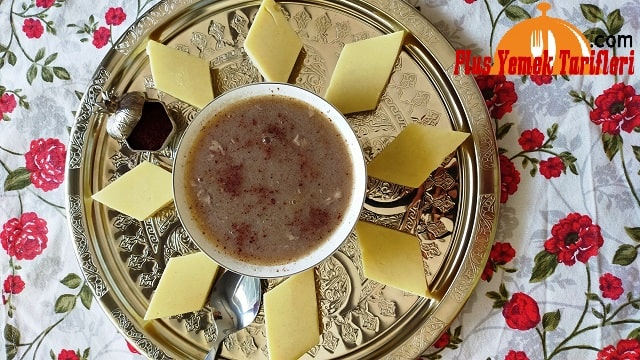

YEMEKLER

MALZEMELER
- Hamuru İçin: 5 su bardağı mısır unu
- 1 paket hamur mayası
- 1 tatlı kaşığı tuz
- İçi için: 1,5 kg. kuzu kıyma
- 3 adet soğan

MALZEMELER
- 1 küçük tavuk göğüs eti
- 5-6 su bardağı su
- 2 yemek kaşığı mısır unu
- 2 yemek kaşığı tereyağı
- 2 yemek kaşığı salça.
- 1 tatlı kaşığı acı toz biber.
- Tuz.
- Arzuya göre karabiber

MALZEMELER
- 5 su bardağı tam buğday unu
- 2 su bardağı su
- 1 tatlı kaşığı tuz
- 1. 5 su bardağı kadar sıvı yağ